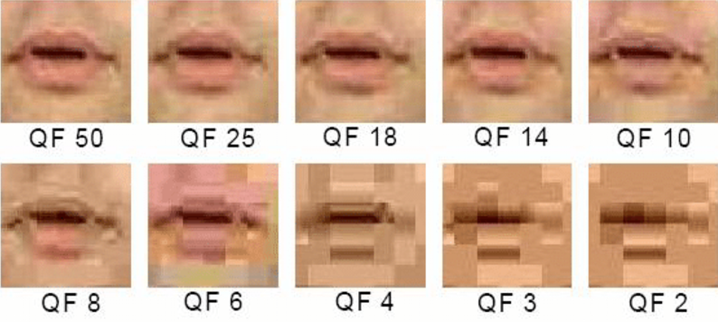

Opdracht 1: Compression
Lossy compression is een process van het verkleinen van een bestand met verlies van data (bv. door de kwaliteit ofhelderheid te verminderen), terwijl lossless compression de bestand kleiner maakt zonder verlies van data.
| Format | Lossy | Lossless |
|---|---|---|
| jpeg | x | |
| png | x | |
| gif | x |
gegeven moment niet meer op het origineel lijken, zoals je ziet in het onderstaande foto.
